Windows环境搭建
软件共享地址 win+R 输入 \\172.20.17.34\share
python-2.7.14.amd64.msi
jdk-8u151-windows-x64.exe
android-studio-ide-171.4408382-windows.exe
gradle-2.14.1-all.zip
都是64位
一、 安装依赖软件
点击安装包一路next 安装完配置用户变量path
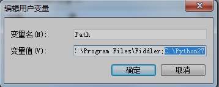
命令行检查是否安装成功 输入 python
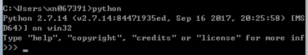
注意设置淘宝镜像加快速度
npm config set registry https://registry.npm.taobao.org –global
npm config set disturl https://npm.taobao.org/dist --global
npm install -g yarn react-native-cli
同样设置淘宝镜像加快速度
yarn config set registry https://registry.npm.taobao.org –global
yarn config set disturl https://npm.taobao.org/dist --global
命令行检查是否安装成功 输入 react-native -v
点击安装包一路next，安装完命令行检查是否安装成功 输入 java –version
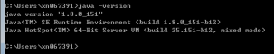
配置环境变量
新建JAVA_HOMEC:\Program Files\Java\jdk1.8.0_172
Path中添加C:\Program Files\Java\jdk1.8.0_172\bin;
Step1:点击安装包一路next，安装完进入首界面，点右下方Configure—SDK Manager
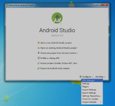
Step2:在SDK Platforms窗口中，选择Show Package Details，
然后在Android 6.0 (Marshmallow)中勾选:
Google APIs
Android SDK Platform 23
Intel x86 Atom System Image
Intel x86 Atom_64 System Image
Google APIs Intel x86 Atom_64 System Image。
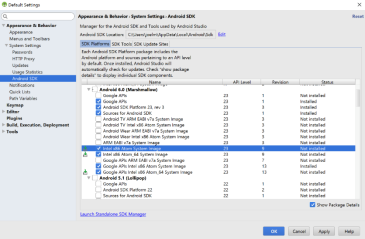
Step3:在SDK Tools窗口中，选择Show Package Details
然后在Android SDK Build Tools中勾选Android SDK Build-Tools 23.0.1和23.0.2（必须包含有这个版本。当然如果其他插件需要其他版本，你可以同时安装其他多个版本）。然后还要勾选最底部的Android Support Repository.
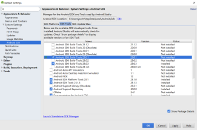
Step4:新建环境变量ANDROID_HOME
C:\Users\xn067391\AppData\Local\Android\Sdk（路径改成你的用户名）
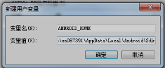
Step5: 将Android SDK的Tools目录添加到PATH变量中
C:\Users\xn067391\AppData\Local\Android\Sdk\tools;（路径改成你的用户名）
C:\Users\xn067391\AppData\Local\Android\Sdk\platform-tools;（路径改成你的用户名）
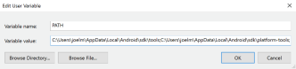
命令行检查是否安装成功 输入 adb version
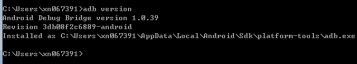
二、 初始化一个RN的工程
命令行执行 react-native init Lesson1 --version 0.55.4
执行完后生成一个Lesson1文件夹，用Vscode打开
修改 Lesson1\android\gradle\wrapper\gradle-wrapper.properties
distributionUrl=file:///D:/gradle-2.14.1-all.zip (可以放到其他地方)
修改build.gradle
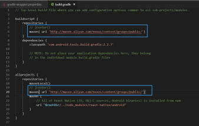
插上手机
命令行执行 cd Lesson1
命令行执行 react-native run-android
浏览器访问看看是否正常
http://localhost:8081/index.bundle?platform=android
三、 遇到的坑
C:\Users\xn067391\.gradle 文件夹是从
distributionUrl=file:///D:/gradle-2.14.1-all.zip解压的
碰到无法解决的问题时可以直接删除.gradle文件夹，然后重新react-native run-android即可
碰到卡在这里
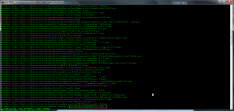
此时需要修改build.gradle
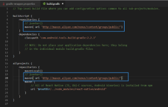
重新执行接下来还会出现如下错误
Exception in thread "png-cruncher_2" java.lang.RuntimeException: Timed out while waiting for slave aapt process, try setting environment variable SLAVE_AAPT_TIMEOUT to a value bigger than 5 seconds
需要设置环境变量
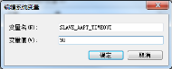
Debug谷歌远程调试时会自动打开谷歌，但地址是ip:8081/debugger-ui
应改为localhost